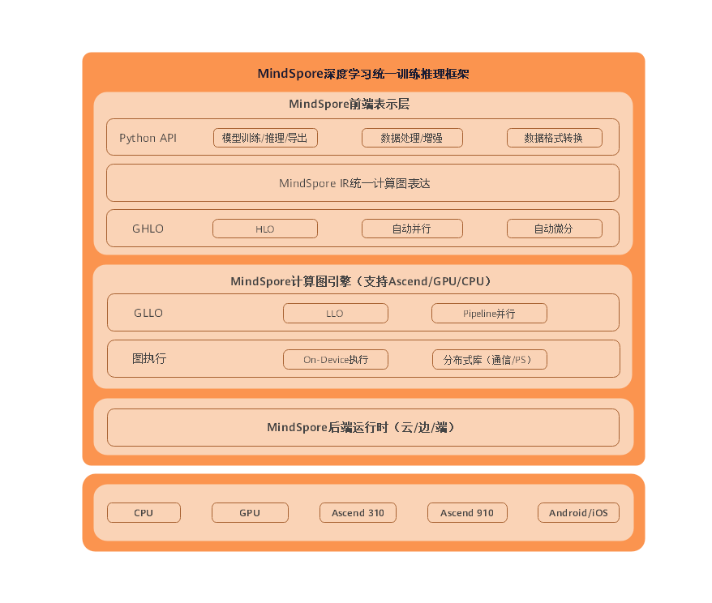

总体架构
Ascend GPU CPU 端侧 模型开发 模型调优 框架开发 中级 高级 贡献者

MindSpore框架架构总体分为MindSpore前端表示层、MindSpore计算图引擎和MindSpore后端运行时三层。

MindSpore前端表示层（Mind Expression，简称ME）
该部分包含Python API、MindSpore IR（Intermediate representation，简称IR）、计算图高级别优化（Graph High Level Optimization，简称GHLO）三部分。
Python API向用户提供统一的模型训练、推理、导出接口，以及统一的数据处理、增强、格式转换接口。
GHLO包含硬件无关的优化（如死代码消除等）、自动并行和自动微分等功能。
MindSpore IR提供统一的中间表示，MindSpore基于此IR进行pass优化。
MindSpore计算图引擎（Graph Engine，简称GE）
该部分包含计算图低级别优化（Graph Low Level Optimization，简称GLLO）、图执行。
GLLO包含硬件相关的优化，以及算子融合、Buffer融合等软硬件结合相关的深度优化。
图执行提供离线图执行、分布式训练所需要的通信接口等功能。
MindSpore后端运行时
该部分包含云、边、端上不同环境中的高效运行环境。